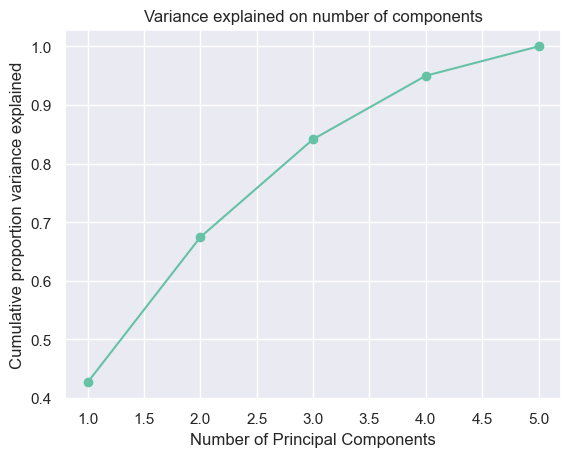
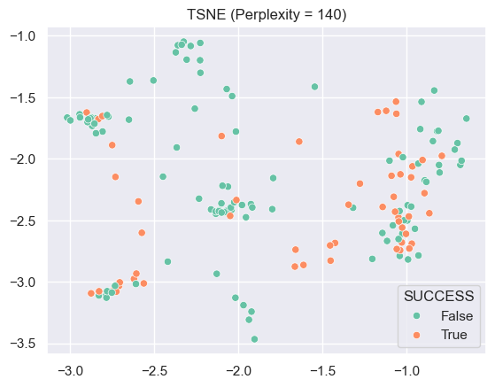

Dimensionality reduction is a helpful data science technique when the dataset has a huge dimension. The dimension is reduced by extracting new components out of input features while maintaining as much variance as possible. These new components make data science algorithms faster to compute and easier to visualize.
1. Principal Component Analysis
Principal Component Analysis (PCA) is reducing the dimension using linear relationships between features. It computes eigenvectors from the covariance matrix determining the direction of the data and selects the top components to explaining the most variance needed.
2. T-distributed Stochastic Neighbor Embedding
Unlike PCA, T-distributed Stochastic Neighbor Embedding (TSNE) doesn’t need to have use linear relationship on making new components. TSNE uses the similarity between features, such as KL divergence, using a t-distribution. TSNE is particularly good at preserving the local structures of features that is helpful to understand complex data.
Both PCA and TSNE is used in this section. In real world example, there will be no labels, but for the measure of effectiveness of those two methods, we are plotting their components with success rate labels. Through that, we will be able to see how much structure or variance are preserved in their components. Then there will be a comparison between PCA and TSNE on their performance.
Since most of feaures in the US Census dataset are categorical, the dataset is aggreagated by the POBP column. POBP,WAGP,SCHL, and NATIVITY columns are dropped. And AGEP column is normalized so that it can have a same range with other variables. On this new dataset, the PCA and TSNE clustering methods will be applied. Then there will be a comparison between PCA and TSNE.
PCA
Code
# Initialize PCA with the number of components as 5pca = PCA(n_components=5)# Fit PCA on the data and transform it into principal componentsXc = pca.fit_transform(X)# Calculate the proportion of variance explained by each principal componentproportion_of_variance = pca.explained_variance_ / np.sum(pca.explained_variance_)# Plot the cumulative proportion of variance explained by the principal componentsplt.plot(np.arange(1, 6), [sum(proportion_of_variance[:i+1]) for i inrange(len(proportion_of_variance))], marker="o")plt.xlabel("Number of Principal Components")plt.ylabel("Cumulative proportion variance explained")plt.title("Variance explained on number of components")plt.show()

Looking at the plot of cumulative proportion variance explained, the optimal number of prinicpal component is 3 as it explains more than 80% of variance of the original dataset.
The plot above is plotting first two principal component explaining about 70% of the variance. It is hard to see clear clusters on the space.
TSNE
Code
# Define a range of perplexity values from 1 to 10 with intervals of 10 up to 150per = np.append(1,np.arange(10,150,10))# Initialize an empty list to store KL divergence valueskld = []# Iterate through each perplexity valuefor i in per:# Create a t-SNE model with 2 components and the current perplexity value model = TSNE(n_components=2, perplexity=i, init='random')# Fit the t-SNE model and transform the data Xt = model.fit_transform(X)# Append the KL divergence value to the list kld.append(model.kl_divergence_)# Print the optimal hyperparameter (perplexity) based on the minimum KL divergenceprint("Optimal hyper parameter:",per[np.argmin(kld)])
Optimal hyper parameter: 140
Based on the KL divergence, the optimal perplexity is 140. This means TSNE is not a good dimentionality reduction method for this dataset because 140 is very close the actual number of rows.
Code
# Initialize a t-SNE model with optimal perplexity (obtained from previous calculations)tsne1 = TSNE(n_components=2, perplexity=per[np.argmin(kld)], init='random')# Fit the t-SNE model and transform the original dataXt1 = tsne1.fit_transform(X)sns.scatterplot(x=Xt1[:,0], y=Xt1[:,1], hue=y)plt.title("TSNE (Perplexity = 140)")plt.show()

As we can see in the plot, TSNE with perpleity 140 is not going well on distinguishing countries.
When perplexity is reduced to 30, the plot has less groups of points, yet it is still not good at differentiating higher and lower successful rate countries.
Results
Both PCA and TSNE are not able to create meaningful components explaining the diffence of success rate between countries.
Code
def merit(x,y,correlation="pearson"):# x=matrix of features # y=matrix (or vector) of targets # correlation="pearson" or "spearman" k = x.shape[1]if correlation =="pearson": rho_xx = np.mean(np.corrcoef(x,x,rowvar=False)) rho_xy = np.mean(np.corrcoef(x,y,rowvar=False))elif correlation =="spearman": rho_xx = np.mean(stats.spearmanr(x,x, axis=0)[0]) rho_xy = np.mean(stats.spearmanr(x,y, axis=0)[0]) merit = k*np.absolute(rho_xy)/(np.sqrt(k+k*(k-1)*np.absolute(rho_xx)))return meritprint("The merit of PCA:",merit(Xc,y))print("The merit of TSNE when perplexity = 140:",merit(Xt1,y))print("The merit of TSNE when perplexity = 50:",merit(Xt2,y))
The merit of PCA: 0.2660165732902509
The merit of TSNE when perplexity = 140: 0.3456705197613567
The merit of TSNE when perplexity = 50: 0.6098311363567865
In terms of merit, TSNE is better methods on feature extraction tha is highly correlated with the output but uncorrelated to each other.